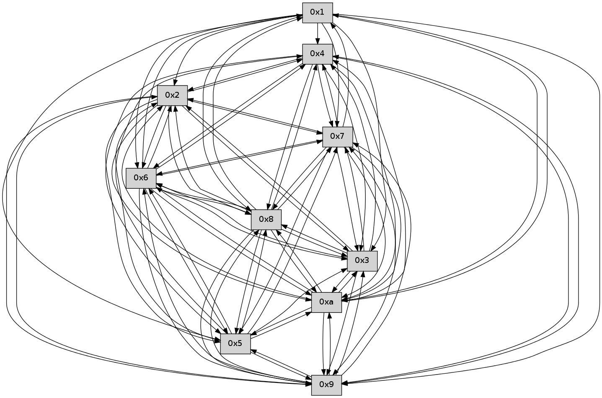

>> << IDX [start] -100 -25 -5 +0 +5 +25 +100 [315.00139904]
 Previous packets
----------------------------------------------------------------------
310.163845 beacon01(faad) #0 coord=01,02,03,04,05,06,07,0a,09,08 cycle=688.0ms assoc
-- color-indic=0 64 08 f4
310.173828 beacon02(faad) #0 coord=01,02,03,04,05,06,07,0a,09,08 cycle=688.0ms assoc 64 9b c5
310.183828 beacon03(faad) #0 coord=01,02,03,04,05,06,07,0a,09,08 cycle=688.0ms assoc 64 e1 88
310.193828 beacon04(faad) #0 coord=01,02,03,04,05,06,07,0a,09,08 cycle=688.0ms assoc 64 96 62
310.203828 beacon05(faad) #0 coord=01,02,03,04,05,06,07,0a,09,08 cycle=688.0ms assoc 64 ec 2f
310.213828 beacon06(faad) #0 coord=01,02,03,04,05,06,07,0a,09,08 cycle=688.0ms assoc 64 62 f8
310.223830 beacon07(faad) #0 coord=01,02,03,04,05,06,07,0a,09,08 cycle=688.0ms assoc 64 18 b5
310.233833 beacon0a(faad) #0 coord=01,02,03,04,05,06,07,0a,09,08 cycle=688.0ms assoc 64 69 be
310.243833 beacon09(faad) #0 coord=01,02,03,04,05,06,07,0a,09,08 cycle=688.0ms assoc 64 e7 69
310.253833 beacon08(faad) #0 coord=01,02,03,04,05,06,07,0a,09,08 cycle=688.0ms assoc 64 9d 24
310.264984 [Hello(9): seq=145 sym=5,2,3,4,7,6,8,10,1 sysInfo= stat=5:1,0,0,0/2:1,0,0,0/3:0,0,0,0/4:0,0,0,0/7:8,0,0,0/6:0,0,0,0/8:6,0,0,0/10:5,0,0,0/1:5,0,0,0]
310.271006 [Hello(10): seq=134 sym=6,3,2,5,9,8,7,4,1 sysInfo= stat=6:9,0,0,0/3:12,0,0,0/2:8,0,0,0/5:6,0,0,0/9:9,0,0,0/8:3,0,0,0/7:15,0,0,0/4:6,0,0,0/1:13,0,0,0]
310.278383 [Hello(7): seq=202 sym=2,3,5,6,4,8,9,10,1 sysInfo= stat=2:9,0,0,0/3:8,0,0,0/5:2,0,0,0/6:14,0,0,0/4:6,0,0,0/8:7,0,0,0/9:9,0,0,0/10:5,0,0,0/1:3,0,0,0]
----------------------------------------------------------------------
310.951977 beacon01(faad) #0 coord=01,02,03,04,05,06,07,0a,09,08 cycle=688.0ms assoc
-- color-indic=0 64 3c ec
310.961959 beacon02(faad) #0 coord=01,02,03,04,05,06,07,0a,09,08 cycle=688.0ms assoc 64 af dd
310.971959 beacon03(faad) #0 coord=01,02,03,04,05,06,07,0a,09,08 cycle=688.0ms assoc 64 d5 90
310.981960 beacon04(faad) #0 coord=01,02,03,04,05,06,07,0a,09,08 cycle=688.0ms assoc 64 a2 7a
310.991959 beacon05(faad) #0 coord=01,02,03,04,05,06,07,0a,09,08 cycle=688.0ms assoc 64 d8 37
311.001959 beacon06(faad) #0 coord=01,02,03,04,05,06,07,0a,09,08 cycle=688.0ms assoc 64 56 e0
311.011961 beacon07(faad) #0 coord=01,02,03,04,05,06,07,0a,09,08 cycle=688.0ms assoc 64 2c ad
311.021964 beacon0a(faad) #0 coord=01,02,03,04,05,06,07,0a,09,08 cycle=688.0ms assoc 64 5d a6
311.031964 beacon09(faad) #0 coord=01,02,03,04,05,06,07,0a,09,08 cycle=688.0ms assoc 64 d3 71
311.041964 beacon08(faad) #0 coord=01,02,03,04,05,06,07,0a,09,08 cycle=688.0ms assoc 64 a9 3c
311.055014 [Hello(4): seq=203 sym=5,7,6,2,3,9,8,10 sysInfo= stat=5:14,0,0,0/7:8,0,0,0/6:14,0,0,0/2:2,0,0,0/3:5,0,0,0/9:3,0,0,0/8:14,0,0,0/10:15,0,0,0]
311.057405 [Hello(5): seq=203 sym=7,6,4,3,1,9,8,10,2 sysInfo= stat=7:6,0,0,0/6:14,0,0,0/4:6,0,0,0/3:4,0,0,0/1:0,0,0,0/9:2,0,0,0/8:8,0,0,0/10:12,0,0,0/2:7,0,0,0]
311.062059 [Hello(3): seq=203 sym=7,6,2,4,8,9,10 sysInfo= stat=7:3,0,0,0/6:15,0,0,0/2:1,0,0,0/4:1,0,0,0/8:5,0,0,0/9:12,0,0,0/10:5,0,0,0]
311.065861 [Hello(2): seq=200 sym=4,5,7,6,3,9,8,10,1 sysInfo= stat=4:4,0,0,0/5:8,0,0,0/7:0,0,0,0/6:11,0,0,0/3:13,0,0,0/9:15,0,0,0/8:12,0,0,0/10:10,0,0,0/1:4,0,0,0]
----------------------------------------------------------------------
311.740108 beacon01(faad) #0 coord=01,02,03,04,05,06,07,0a,09,08 cycle=688.0ms assoc
-- color-indic=0 64 80 e9
311.750090 beacon02(faad) #0 coord=01,02,03,04,05,06,07,0a,09,08 cycle=688.0ms assoc 64 13 d8
311.760092 beacon03(faad) #0 coord=01,02,03,04,05,06,07,0a,09,08 cycle=688.0ms assoc 64 69 95
311.770090 beacon04(faad) #0 coord=01,02,03,04,05,06,07,0a,09,08 cycle=688.0ms assoc 64 1e 7f
311.780092 beacon05(faad) #0 coord=01,02,03,04,05,06,07,0a,09,08 cycle=688.0ms assoc 64 64 32
311.790090 beacon06(faad) #0 coord=01,02,03,04,05,06,07,0a,09,08 cycle=688.0ms assoc 64 ea e5
311.800092 beacon07(faad) #0 coord=01,02,03,04,05,06,07,0a,09,08 cycle=688.0ms assoc 64 90 a8
311.810097 beacon0a(faad) #0 coord=01,02,03,04,05,06,07,0a,09,08 cycle=688.0ms assoc 64 e1 a3
311.820096 beacon09(faad) #0 coord=01,02,03,04,05,06,07,0a,09,08 cycle=688.0ms assoc 64 6f 74
311.830098 beacon08(faad) #0 coord=01,02,03,04,05,06,07,0a,09,08 cycle=688.0ms assoc 64 15 39
311.841252 [Hello(7): seq=203 sym=2,3,5,6,4,8,9,10,1 sysInfo= stat=2:10,0,0,0/3:9,0,0,0/5:3,0,0,0/6:14,0,0,0/4:6,0,0,0/8:7,0,0,0/9:9,0,0,0/10:5,0,0,0/1:4,0,0,0]
311.844902 [Hello(10): seq=135 sym=6,3,2,5,9,8,7,4,1 sysInfo= stat=6:9,0,0,0/3:13,0,0,0/2:9,0,0,0/5:7,0,0,0/9:9,0,0,0/8:3,0,0,0/7:0,0,0,0/4:6,0,0,0/1:14,0,0,0]
311.850793 [Hello(9): seq=146 sym=5,2,3,4,7,6,8,10 sysInfo= stat=5:2,0,0,0/2:2,0,0,0/3:1,0,0,0/4:0,0,0,0/7:9,0,0,0/6:0,0,0,0/8:7,0,0,0/10:6,0,0,0]
311.855286 [Hello(6): seq=203 sym=2,3,5,4,7,9,8,10,1 sysInfo= stat=2:14,0,0,0/3:11,0,0,0/5:0,0,0,0/4:1,0,0,0/7:5,0,0,0/9:11,0,0,0/8:12,0,0,0/10:11,0,0,0/1:7,0,0,0]
311.862781 [Hello(8): seq=146 sym=5,2,3,4,7,6,9,10,1 sysInfo= stat=5:11,0,0,0/2:12,0,0,0/3:10,0,0,0/4:2,0,0,0/7:10,0,0,0/6:14,0,0,0/9:15,0,0,0/10:0,0,0,0/1:6,0,0,0]
----------------------------------------------------------------------
312.528239 beacon01(faad) #0 coord=01,02,03,04,05,06,07,0a,09,08 cycle=688.0ms assoc
-- color-indic=0 64 44 e7
312.538222 beacon02(faad) #0 coord=01,02,03,04,05,06,07,0a,09,08 cycle=688.0ms assoc 64 d7 d6
312.548221 beacon03(faad) #0 coord=01,02,03,04,05,06,07,0a,09,08 cycle=688.0ms assoc 64 ad 9b
312.558221 beacon04(faad) #0 coord=01,02,03,04,05,06,07,0a,09,08 cycle=688.0ms assoc 64 da 71
312.568221 beacon05(faad) #0 coord=01,02,03,04,05,06,07,0a,09,08 cycle=688.0ms assoc 64 a0 3c
312.578221 beacon06(faad) #0 coord=01,02,03,04,05,06,07,0a,09,08 cycle=688.0ms assoc 64 2e eb
312.588222 beacon07(faad) #0 coord=01,02,03,04,05,06,07,0a,09,08 cycle=688.0ms assoc 64 54 a6
312.598227 beacon0a(faad) #0 coord=01,02,03,04,05,06,07,0a,09,08 cycle=688.0ms assoc 64 25 ad
312.608226 beacon09(faad) #0 coord=01,02,03,04,05,06,07,0a,09,08 cycle=688.0ms assoc 64 ab 7a
312.618227 beacon08(faad) #0 coord=01,02,03,04,05,06,07,0a,09,08 cycle=688.0ms assoc 64 d1 37
312.629354 [Hello(3): seq=204 sym=7,6,2,4,8,9,10 sysInfo= stat=7:4,0,0,0/6:0,0,0,0/2:2,0,0,0/4:1,0,0,0/8:6,0,0,0/9:13,0,0,0/10:6,0,0,0]
312.635216 [Hello(4): seq=204 sym=5,7,6,2,3,9,8,10 sysInfo= stat=5:15,0,0,0/7:9,0,0,0/6:15,0,0,0/2:3,0,0,0/3:6,0,0,0/9:4,0,0,0/8:15,0,0,0/10:0,0,0,0]
----------------------------------------------------------------------
313.316372 beacon01(faad) #0 coord=01,02,03,04,05,06,07,0a,09,08 cycle=688.0ms assoc
-- color-indic=0 64 f8 e2
313.326354 beacon02(faad) #0 coord=01,02,03,04,05,06,07,0a,09,08 cycle=688.0ms assoc 64 6b d3
313.336354 beacon03(faad) #0 coord=01,02,03,04,05,06,07,0a,09,08 cycle=688.0ms assoc 64 11 9e
313.346355 beacon04(faad) #0 coord=01,02,03,04,05,06,07,0a,09,08 cycle=688.0ms assoc 64 66 74
313.356356 beacon05(faad) #0 coord=01,02,03,04,05,06,07,0a,09,08 cycle=688.0ms assoc 64 1c 39
313.366355 beacon06(faad) #0 coord=01,02,03,04,05,06,07,0a,09,08 cycle=688.0ms assoc 64 92 ee
313.376357 beacon07(faad) #0 coord=01,02,03,04,05,06,07,0a,09,08 cycle=688.0ms assoc 64 e8 a3
313.386361 beacon0a(faad) #0 coord=01,02,03,04,05,06,07,0a,09,08 cycle=688.0ms assoc 64 99 a8
313.396361 beacon09(faad) #0 coord=01,02,03,04,05,06,07,0a,09,08 cycle=688.0ms assoc 64 17 7f
313.406362 beacon08(faad) #0 coord=01,02,03,04,05,06,07,0a,09,08 cycle=688.0ms assoc 64 6d 32
313.418173 [Hello(8): seq=147 sym=5,2,3,4,7,6,9,10,1 sysInfo= stat=5:11,0,0,0/2:13,0,0,0/3:11,0,0,0/4:2,0,0,0/7:10,0,0,0/6:14,0,0,0/9:15,0,0,0/10:0,0,0,0/1:6,0,0,0]
313.422103 [Hello(9): seq=147 sym=5,2,3,4,7,6,8,10 sysInfo= stat=5:2,0,0,0/2:2,0,0,0/3:2,0,0,0/4:1,0,0,0/7:9,0,0,0/6:1,0,0,0/8:8,0,0,0/10:6,0,0,0]
313.428661 [Hello(7): seq=204 sym=2,3,5,6,4,8,9,10,1 sysInfo= stat=2:11,0,0,0/3:10,0,0,0/5:3,0,0,0/6:15,0,0,0/4:6,0,0,0/8:8,0,0,0/9:10,0,0,0/10:6,0,0,0/1:4,0,0,0]
313.433103 [Hello(6): seq=204 sym=2,3,5,4,7,9,8,10,1 sysInfo= stat=2:15,0,0,0/3:12,0,0,0/5:0,0,0,0/4:1,0,0,0/7:5,0,0,0/9:11,0,0,0/8:13,0,0,0/10:11,0,0,0/1:7,0,0,0]
313.436485 [Hello(10): seq=136 sym=6,3,2,5,9,8,7,4,1 sysInfo= stat=6:10,0,0,0/3:14,0,0,0/2:9,0,0,0/5:7,0,0,0/9:10,0,0,0/8:4,0,0,0/7:0,0,0,0/4:6,0,0,0/1:14,0,0,0]
----------------------------------------------------------------------
314.104505 beacon01(faad) #0 coord=01,02,03,04,05,06,07,0a,09,08 cycle=688.0ms assoc
-- color-indic=0 64 5f 92
314.114487 beacon02(faad) #0 coord=01,02,03,04,05,06,07,0a,09,08 cycle=688.0ms assoc 64 cc a3
314.124487 beacon03(faad) #0 coord=01,02,03,04,05,06,07,0a,09,08 cycle=688.0ms assoc 64 b6 ee
314.134489 beacon04(faad) #0 coord=01,02,03,04,05,06,07,0a,09,08 cycle=688.0ms assoc 64 c1 04
314.144487 beacon05(faad) #0 coord=01,02,03,04,05,06,07,0a,09,08 cycle=688.0ms assoc 64 bb 49
314.154487 beacon06(faad) #0 coord=01,02,03,04,05,06,07,0a,09,08 cycle=688.0ms assoc 64 35 9e
314.164490 beacon07(faad) #0 coord=01,02,03,04,05,06,07,0a,09,08 cycle=688.0ms assoc 64 4f d3
314.174493 beacon0a(faad) #0 coord=01,02,03,04,05,06,07,0a,09,08 cycle=688.0ms assoc 64 3e d8
314.184493 beacon09(faad) #0 coord=01,02,03,04,05,06,07,0a,09,08 cycle=688.0ms assoc 64 b0 0f
314.194493 beacon08(faad) #0 coord=01,02,03,04,05,06,07,0a,09,08 cycle=688.0ms assoc 64 ca 42
314.205627 [Hello(4): seq=205 sym=5,7,6,2,3,9,8,10 sysInfo= stat=5:15,0,0,0/7:10,0,0,0/6:0,0,0,0/2:3,0,0,0/3:6,0,0,0/9:5,0,0,0/8:0,0,0,0/10:1,0,0,0]
314.209592 [Hello(2): seq=202 sym=4,5,7,6,3,9,8,10 sysInfo= stat=4:5,0,0,0/5:8,0,0,0/7:2,0,0,0/6:13,0,0,0/3:13,0,0,0/9:1,0,0,0/8:14,0,0,0/10:12,0,0,0]
314.217867 [Hello(5): seq=205 sym=7,6,4,3,9,8,10,2 sysInfo= stat=7:8,0,0,0/6:0,0,0,0/4:7,0,0,0/3:5,0,0,0/9:4,0,0,0/8:10,0,0,0/10:14,0,0,0/2:8,0,0,0]
314.220601 [Hello(3): seq=205 sym=7,6,2,4,8,9,10 sysInfo= stat=7:5,0,0,0/6:1,0,0,0/2:3,0,0,0/4:1,0,0,0/8:7,0,0,0/9:14,0,0,0/10:7,0,0,0]
----------------------------------------------------------------------
314.892638 beacon01(faad) #0 coord=01,02,03,04,05,06,07,0a,09,08 cycle=688.0ms assoc
-- color-indic=0 64 e3 97
314.902620 beacon02(faad) #0 coord=01,02,03,04,05,06,07,0a,09,08 cycle=688.0ms assoc 64 70 a6
314.912620 beacon03(faad) #0 coord=01,02,03,04,05,06,07,0a,09,08 cycle=688.0ms assoc 64 0a eb
314.922622 beacon04(faad) #0 coord=01,02,03,04,05,06,07,0a,09,08 cycle=688.0ms assoc 64 7d 01
314.932620 beacon05(faad) #0 coord=01,02,03,04,05,06,07,0a,09,08 cycle=688.0ms assoc 64 07 4c
314.942621 beacon06(faad) #0 coord=01,02,03,04,05,06,07,0a,09,08 cycle=688.0ms assoc 64 89 9b
314.952621 beacon07(faad) #0 coord=01,02,03,04,05,06,07,0a,09,08 cycle=688.0ms assoc 64 f3 d6
314.962625 beacon0a(faad) #0 coord=01,02,03,04,05,06,07,0a,09,08 cycle=688.0ms assoc 64 82 dd
314.972625 beacon09(faad) #0 coord=01,02,03,04,05,06,07,0a,09,08 cycle=688.0ms assoc 64 0c 0a
314.982626 beacon08(faad) #0 coord=01,02,03,04,05,06,07,0a,09,08 cycle=688.0ms assoc 64 76 47
314.993759 [Hello(9): seq=148 sym=5,2,3,4,7,6,8,10 sysInfo= stat=5:3,0,0,0/2:3,0,0,0/3:3,0,0,0/4:1,0,0,0/7:10,0,0,0/6:2,0,0,0/8:8,0,0,0/10:7,0,0,0]
314.998081 [Hello(8): seq=148 sym=5,2,3,4,7,6,9,10,1 sysInfo= stat=5:12,0,0,0/2:14,0,0,0/3:12,0,0,0/4:2,0,0,0/7:11,0,0,0/6:15,0,0,0/9:0,0,0,0/10:1,0,0,0/1:7,0,0,0]